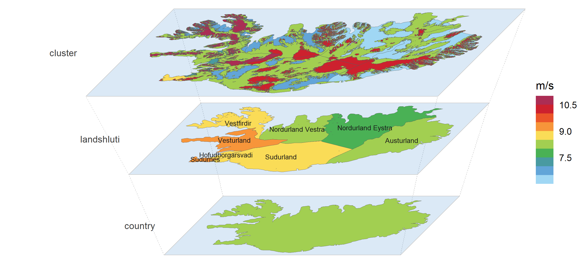
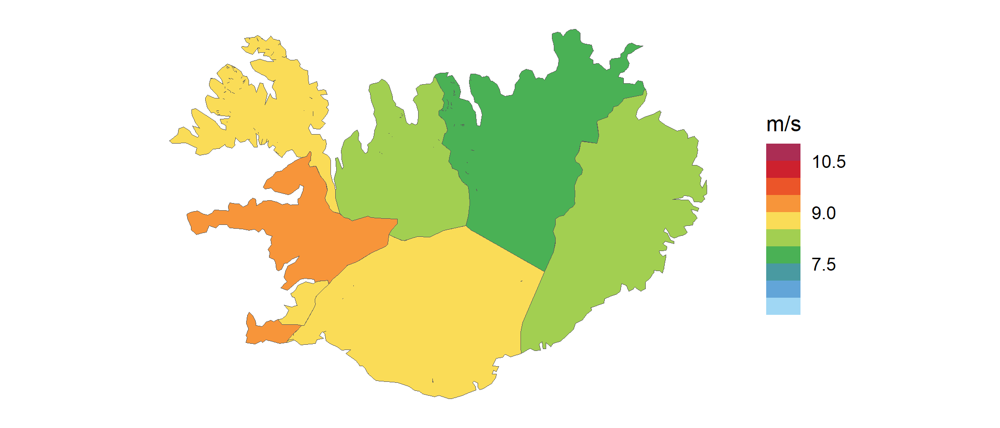
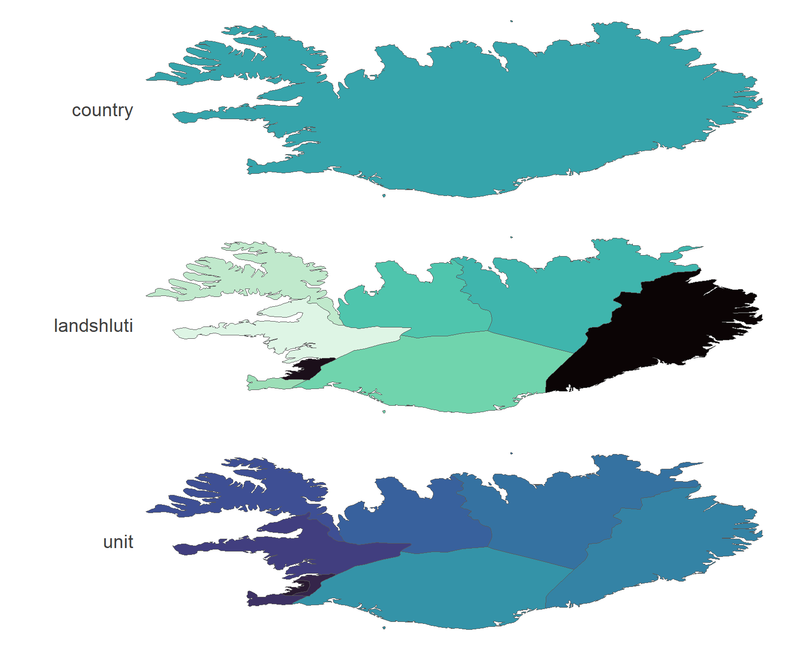

Overview
geoscales provides nested regions and spatial hierarchies for optimization and simulation models: organize the spatial dimension of your model data, convert it between region systems, and see every level at once.
-
geoscale_from_leaftable()builds aGeoscale— ordered geoframes, their members, and one leaftable row per leaf region (“atom”) with its weights (area, population, capacity);ne_geoscale()builds one straight from Natural Earth, andattach_geometry_geoscale()adds boundaries from any source — the package ships integration code, not maps. -
join_geoscale()decorates a table keyed by regions with the geoscale’s columns — your tables stay tables (data.frame, tibble, data.table, dtplyr/arrow in; the same class out). -
recast_geoscale()converts values between geoframes — up, down, and across cross-cutting region systems — one rule per value column, totals conserved. -
filter_geoscale()andprune_geoscale()carve region samples and coarser designs for model runs, with coverage bookkeeping. -
geom_geoscale()andgeoscale_autoplot()draw any level: choropleths, icicles, and axonometric stacks.
geoscales is the spatial-domain package of the optimal2050 modeling stack; its time companion, timescales, shares the same design and vocabulary.
If you are new to geoscales, the best place to start is the get-started vignette (vignette("geoscales")).
Installation
geoscales is not on CRAN yet; install the development version from GitHub:
# install.packages("pak")
pak::pkg_install("optimal2050/geoscales")Usage
One Geoscale, three resolutions of the same country: Iceland’s onshore wind resource (Global Wind Atlas, 100 m) clustered by wind speed within each region — the whole hierarchy drawn as a single perspective stack, every plane on the Global Wind Atlas palette at its absolute scale (from energypal). Its time twin — Reykjavik’s wind year on a calendar stack — opens the timescales README. The get-started vignette shows how the cluster layer is built from the raster.

The same data moves between the levels by one verb — recast_geoscale(), the same machinery that converts model tables — here the cluster values as area-weighted means of each region’s resource area, on the flat map:

Wind data: Global Wind Atlas — DTU, in partnership with the World Bank Group, data by Vortex, funded by ESMAP.
And building a Geoscale takes a leaftable and (optionally) a map — here Iceland’s administrative hierarchy from Natural Earth, drawn as a top-down stack:
library(geoscales)
ne <- ne_source(geoframe = "states", country = "Iceland")
d <- as.data.frame(ne)
iceland <- geoscale_from_leaftable(
data.frame(country = "ISL", landshluti = d$gn_name,
unit = d$iso_3166_2),
geoframes = c("country", "landshluti", "unit"),
key = "unit", name = "iceland"
) |>
attach_geometry_geoscale(ne, by = "iso_3166_2", geoframe = "unit")
geoscale_autoplot(iceland, type = "stack", view = "top-down", gap = .35)
Learning more
- The get-started vignette — build, inspect, convert, visualize, plus the wind-cluster recipe behind the hero.
- Concepts — what makes space harder than time: geoframes need not nest, region codes are not unique across geoframes, and no maps are bundled.
- Visualization — choropleths, recasts seen on the map, stacks and icicles with data.
- The project site — entry point for all language flavours — and the R reference.
Getting help
geoscales is pre-1.0 and APIs may still change between minor versions. Questions, feedback, and bug reports are welcome on the issue tracker; see CONTRIBUTING for the repository layout and the multi-language roadmap.
License
Apache-2.0. See LICENSE.